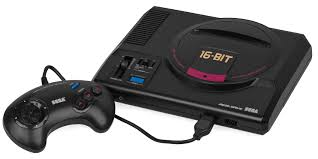
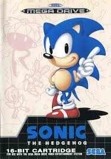

Oque era? e como marcou gerações
O Mega Drive, conhecido como Sega Genesis na América do Norte, foi um console de videogame de 16 bits lançado pela Sega. Foi um console muito popular nos anos 90, famoso por seus jogos de ação e aventura, como Sonic the Hedgehog e Street Fighter II.
 O Mega Drive, conhecido como Sega Genesis nos Estados Unidos, foi um console de videogame de 16 bits lançado pela Sega em 1988 no Japão. No Brasil, foi lançado pela Tectoy em 1990, um ano após o Master System, com foco em jogadores experientes e com jogos como "Altered Beast" incluído.

| Nome | Primeiro lançamento |
|---|---|
| Megadrive | 1988 |